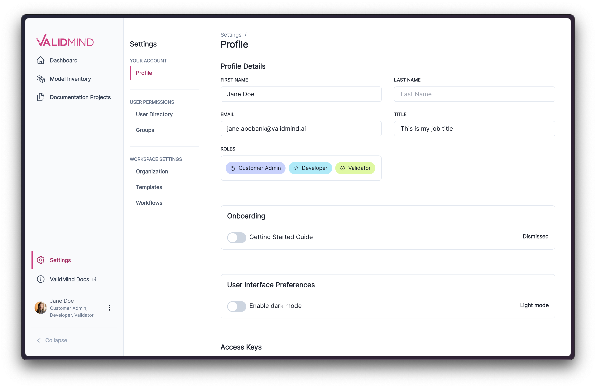
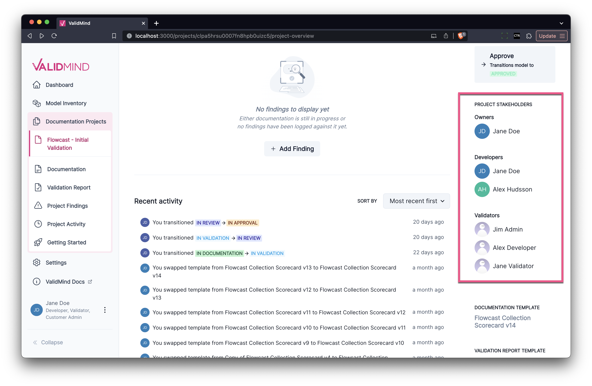

January 18, 2024
Release highlights
This release introduces a new dark mode to the ValidMind Platform UI, along with new user and template management features, other enhancements, and bug fixes.
ValidMind Platform UI (v1.11.0)
Dark mode
You now have the option to set your color theme preference for the ValidMind Platform UI. The theme can be set by toggling Enable Dark Mode in your profile settings.
Here is how the available themes look side by side:


The selected theme setting is saved to your user profile and applied across all devices where you log in.
User and group management
We continue to make easier to set up and administer ValidMind for members in your organization. In this release, we are introducing new user and group management features that are available right in the platform UI.
The new user management features are available under Settings > User Directory:

These features enable you to:
- Invite members of your organization by email
- Display pending user invitations
- Get notifications for successful or failed user invitations
Try it in the platform UI: User directory
The new group management features are available under Settings > Groups:

These features enable you to:
- Assign permissions for multiple users at once
- View existing group members
- Add or remove group members
Try it in the platform UI: Groups
Template management
New template management features, available under Settings > Templates, enable you to work with templates more efficiently:

You use these new template management features to:
- See which models use which template, and which version of that template.
- Navigate from templates to models.
- Get direct links for templates that you can share with others.
- Navigate templates more easily by outline sections that you can expand instead of having to parse JSON code.
- Edit templates to create a new template versions with a visual comparison of the differences.
- Duplicate templates and modify them in order to create additional templates for your use cases.
Try it in the ValidMind Platform UI: Templates
Enhancements
- Stakeholder roles for projects: To simplify the identification of roles that stakeholders hold for model documentation, stakeholders are now categorized by role type. This includes groupings for Owners, Developers, and Validators.

- Upgraded search experience. We’ve updated the component in our web application responsible for the search command bar interface. The new version brings enhanced search performance, particularly for multi-word queries.
Bug fixes
- Text highlighting for comments. We fixed text highlighting associated with comments so that text is more legible in both light and dark themes. Additionally, we fixed the divider background on AI content generation and made some changes to empty text block contents.
- Dynamic index display in templates. We fixed an issue where the internal
orderandindexproperties were incorrectly exposed in the template editor. These properties have no effect during template editing as they are dynamically generated. The fix now prevents these properties from being saved back to the template.
- Activity links now redirect users to the relevant section. We fixed an issue where clicking on recent activity items related to comments or test descriptions inside a test- driven block would take the user to a non-existent page. This functionality has been corrected by redirecting the user to the section that a content block belongs to.
Search experience fixes. We implemented multiple fixes to the search functionality in the platform UI:
- Linking from recent activity items has been corrected to ensure accurate navigation.
- Routing to documentation pages when a search result is associated with text in a test-driven block now works as expected.
- Search now excludes results for
content_idthat are no longer part of the documentation. - Search functionality is now available from project overview pages. Previously, search only worked when invoked from documentation pages.
Issues with the user selection component. We fixed the following UI/UX issues with the user picker interface component:
- Clicking on X now properly clears the current search input and dismisses the user list.
- Clicking on Cancel now properly clears out any unsaved users from the list.
- Entering text now correctly filters users that match the search criteria.
- A new ‘micro search’ utility improves user matching.
Additionally, we updated the business unit selector component to be a simple dropdown.
- Disappearing status updates on dashboard. We fixed an issue where the Recent activity widget would become unavailable when clicking on Status updates. We now show an empty state element when there is no data to show.
How to upgrade
To access the latest version of the ValidMind Platform UI, reload your browser tab.
To upgrade the ValidMind Developer Framework:
Using Jupyter Hub: reload your browser tab and re-run the
!pip install --upgrade validmindcell.In your own developer environment: restart your notebook and re-run:
!pip install validmind